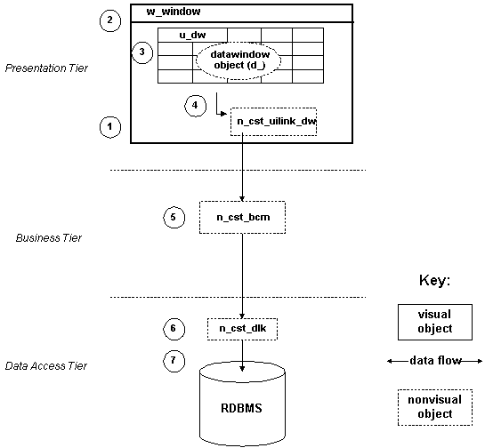

When an application is started, the Application Manager creates, in the Presentation tier, an instance of the UI Link for each DataWindow in the application.
The first window (w_window) is instantiated.
The window is populated with its controls (u_dw), each of which has an associated DataWindow object (i.e.,
query; d_).
The control then passes a query pointer to the UI Link.
The UI Link instantiates the Business Collection Manager in the Business tier and passes it the pointer.
The Business Collection Manager then instantiates a Datalink object, which contains both the query and the
appropriate data access information.
The Datalink then handles all communications with the database to retrieve the result set of data.
